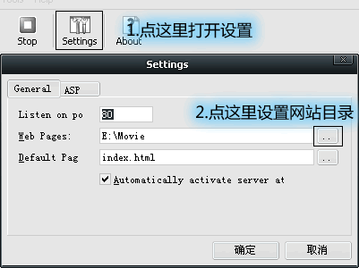
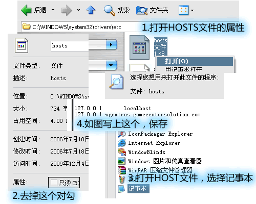

让Music Catch 2 Flash版加载本地音乐的方法
今天在ACFUN上看到一款叫Music Catch的Flash游戏，试玩后觉得很有意思，可继续看发现Music Catch 2的Flash版不支持加载本地音乐，只有第一代单机版支持。
Music Catch 2只支持加载URL上的音乐，但架设服务器后，用127.0.0.1或localhost之类的URL无效，网络上的URL就有效。
检查发现这个游戏加载文件不是直接加载，而是通过 http://wgextras.gamecentersolution.com/proxy.php 这个网址来中转加载。所以用127.0.0.1之类只有本地能访问的地址会无效。
因此，只要使用gamecentersolution.com能获取的地址，就是公网IP，就可以成功加载。
使用这个方法的前提是你有公网的IP（单机拨号上网等），内网用户不行（网吧，寝室共享局域网之类）（你可以在路由里设置的话当我没说）。
具体方法如下：
首先建立一个服务器。推荐使用Http File Server（以下简称HFS）或Baby Web Server（以下简称BABYWEB），Apache什么的专业服务器也行。这里介绍BABYWEB。
BABYWEB是一个简易的HTTP服务器，绿色免费软件，功能对于单机测试静态网站已经足够。
下载后解压，打开babyweb.exe，第一次使用会弹出一个提示框，分别选第二个按钮和 I Agree。
在设置里设置网站目录为你存放MP3的文件夹，如图所示。

然后，打开ip138之类的网站，查看你的IP，记下来。另外一般的宽带上网每次拨号，IP都会变化。
然后，打开浏览器测试一下，输入 http://你的IP/你的MP3文件名.MP3 ，能够打开或者弹出下载就表示服务器建立成功了。
（你可以用这个跟局域网里的朋友高速共享文件（一般5M/S以上），但对于文件共享推荐使用HFS，这里就不详细介绍了。）
然后，就可以在游戏里输入刚才的网址，慢慢缓冲开始游戏了……
这个方法有许多不足，一是不支持内网，二是不支持离线使用，三是缓冲速度相对较慢……本地音乐难道要在网上兜一圈才能被游戏读取么……
于是继续思考，发现 http://wgextras.gamecentersolution.com/proxy.php 返回的文件和上传的文件完全一样。也就是说，只要使游戏读取的网址实际是本地音乐文件就可以了。也就是说，将音乐文件名改为proxy.php，通过hosts将wgextras.gamecentersolution.com解析至127.0.0.1，就能实现真正的本地读取了……
具体方法如下：
首先按上面的方法建立服务器，这里不能使用HFS，因为测试时发现它不能正确处理游戏的请求。（竟然是POST方法，我囧）
然后打开 WINDOWS\system32\drivers\etc 文件夹，去掉Hosts这个文件的只读属性（如果有的话），用记事本打开它，在里面加上
127.0.0.1 wgextras.gamecentersolution.com
然后保存文件。重启电脑或刷新DNS缓存之后访问 wgextras.gamecentersolution.com 就会转到 127.0.0.1 这个本地地址。

（表面上看不出，ping一下便知）
（这个方法也可以实现屏蔽网站，具体方法跟这个一样）
（这个方法还可以被病毒木马利用，比如在打开QQ空间时弹出虚假中奖信息。看起来网页确实是QQ的域名，可实际访问的是黑客的服务器。防御方法是保证不中毒，无视夸张的中奖信息……）
开启BABYWEB，将要播放的音乐复制到网站文件夹，文件名改成 proxy.php （连扩展名一起改）。另外复制一个 crossdomain.xml 到网站文件夹，因为测试时发现游戏还会读取这个文件。
这样在游戏里输入任意地址即可直接进入游戏，无需从网上下载，但因为BABYWEB会有点卡，需要等几秒。
另外，我写了个AHK脚本，可以直接启动并设置BABYWEB，并选择文件复制到BABYWEB目录……使用时修改好hosts文件之后直接打开此程序即可。注意：这个脚本退出时会自动关闭BABYWEB。
↑内含脚本，BABYWEB，游戏
附游戏介绍